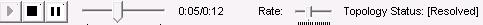

By default, the toolbar is displayed across the top of the application window and below the menu bar. The toolbar provides quick mouse access to the Controls Menu items. The toolbar buttons are enabled only after a topology is resolved successfully.
The following screen shot shows the TopoEdit toolbar.

The following table describes the toolbar buttons:
| Toolbar Button | Description |
|---|---|
| Play button. Starts playback of the last resolved topology. | |
| Stop button. Stops playback of the last resolved topology that is currently playing. | |
| Pause button. Pauses playback of the last resolved topology that is currently playing. | |
| Seek bar. Shows the playback progress. Use this bar to seek to different points in the timeline during playback. | |
| Playback timer. Current presentation time and total playback duration in seconds. | |
| Rate bar. Shows the current playback rate. Use this bar to increase or decrease the rate. Note: The playback rate depends on the rates that are supported by the topology. For more information about rate control support in Media Foundation and the associated APIs, see Rate Control. | |
| Topology status. When a topology is resolved, the status is [Resolved]. If the topology is modified, the status is changed to [Not Resolved]. |
Â
Â
Â